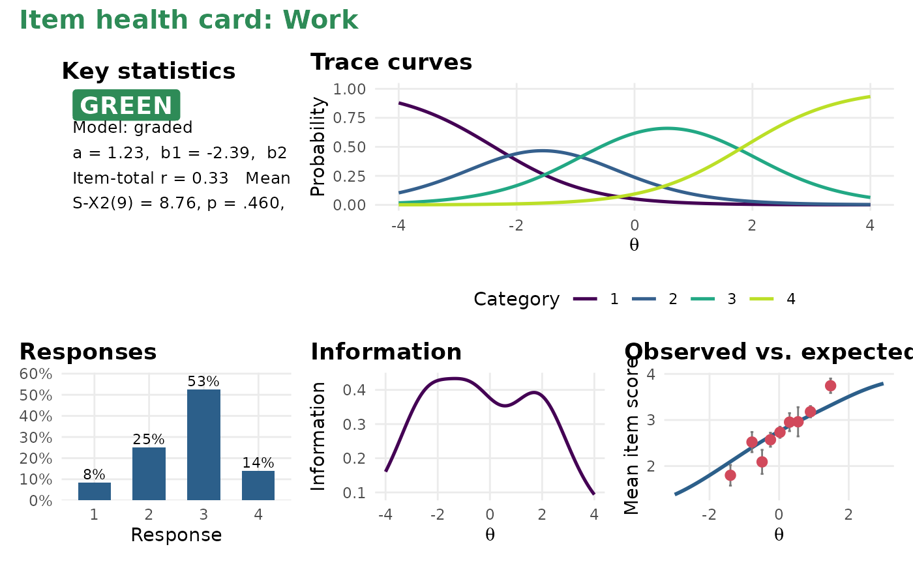

A one-page visual summary of a single item for item review meetings: trace curves, information, observed versus expected scores, the response distribution and a key-statistics panel with a traffic-light status.
Arguments
- x
a unidimensional model from
mirt::mirt().- item
a single item, by position or name.
- alpha
significance level for item misfit.
- tab
optional precomputed
item_table()(saves time when making many cards).
Details
Status rules: red for misfit, low discrimination (a < 0.5) or an
item-total correlation below .10; amber for any other flag (see
item_table()); green otherwise.
Examples
mod <- mirt(Science, 1, verbose = FALSE)
item_card(mod, "Work")
